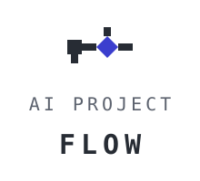

| Concept | The mark is a workflow in miniature. A square node (the project file / terminal block cursor) receives the flow from below, passes it to a diamond node — the decision point where a project is shaped — which then splits: the main path continues forward while a branch ascends. One input, one decision, two outcomes. |
|---|---|
| Geometry | All elements sit on an 8px unit grid. Nodes are 16×16; flow bars are 8px. Only axis-aligned and 45° edges are used, so joins are exact. Diamond = a square rotated 45° — the same node, in motion. |
| Colors — light | Accent #3B3ECE (diamond) · Ink #272C34 (nodes & bars) · text #272C34 |
| Colors — dark | Accent #7678E5 (diamond) · Ink #EDEFF2 (nodes & bars) · text #EDEFF2 |
| Type | IBM Plex Mono — “AI PROJECT” regular, “FLOW” bold. Monospace reinforces the developer/terminal character and pairs with IBM Plex Sans Arabic already used on the site. |
| Clear space | Minimum clearance on all sides equals the mark’s node height (one 16-unit square). Never place the mark closer to other elements. |
| Minimum size | Lockup 120px wide · mark 24px · favicon 16px. Below that, use the favicon simplification. |
Concept stage — application unchanged. Deliverables in docs/logo/: primary lockup (light/dark), standalone mark (light/dark), stacked lockup, theme-aware favicon, this preview, and a spec README.